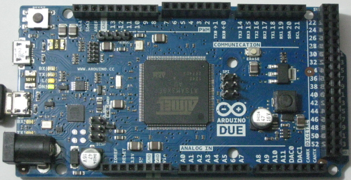

En los últimos años están apareciendo multitud de miniordenadores. Estos son algunos de ellos:
MiniPCs
|
ArduinoArduino es una plataforma de hardware libre que ofrece microcontroladores en pequeñas placas.  |